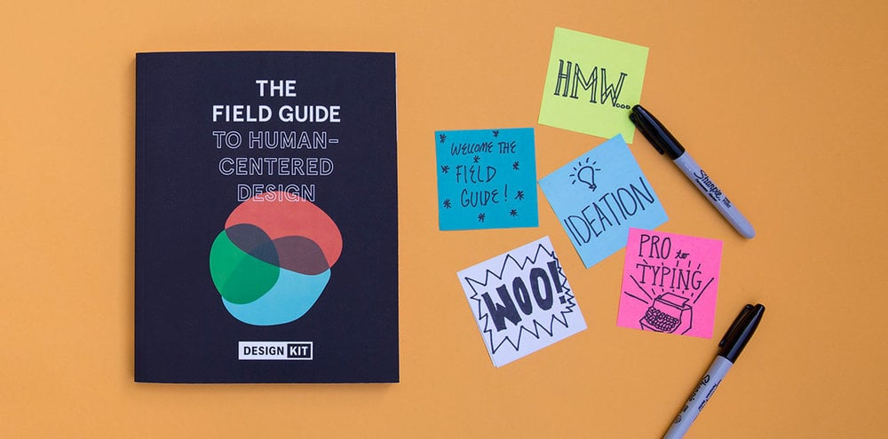

Keep Learners At The Center Of The Design Process
Designing
Definition of Learning Design
Learning Design is the framework that supports learning experiences. It refers to deliberate choices about what, when, where and how to teach. Decisions need to be made about the content, structure, timing, pedagogical strategies, sequence of learning activities, and the type and frequency of assessment in the course, as well as the nature of technology used to support learning.
User Interface Design
- Graphical user interfaces (GUIs)
- Users interact with visual representations on a computer's screen. The desktop is an example of a GUI.
- Interfaces controlled through voice
- Users interact with these through their voices. Most smart assistants, such as Siri on smartphones or Alexa on Amazon devices, use voice control.
- Interactive interfaces utilizing gestures
- Users interact with 3D design environments through their bodies, e.g., in virtual reality (VR) games.
Interface design is involved in a wide range of projects, from computer systems, to cars, to commercial planes; all of these projects involve much of the same basic human interactions yet also require some unique skills and knowledge. As a result, designers tend to specialize in certain types of projects and have skills centered on their expertise, whether it is software design, user research, web design, or industrial design.
Good user interface design facilitates finishing the task at hand without drawing unnecessary attention to itself. Graphic design and typography are utilized to support its usability, influencing how the user performs certain interactions and improving the aesthetic appeal of the design; design aesthetics may enhance or detract from the ability of users to use the functions of the interface.[1] The design process must balance technical functionality and visual elements (e.g., mental model) to create a system that is not only operational but also usable and adaptable to changing user needs.
UI design vs. UX design
[edit]User interface design is a craft in which designers perform an important function in creating the user experience. UI design should keep users informed about what is happening, giving appropriate feedback in a timely manner. The visual look and feel of UI design sets the tone for the user experience.[2] On the other hand, the term UX design refers to the entire process of creating a user experience.
Don Norman and Jakob Nielsen said:
It's important to distinguish the total user experience from the user interface (UI), even though the UI is obviously an extremely important part of the design. As an example, consider a website with movie reviews. Even if the UI for finding a film is perfect, the UX will be poor for a user who wants information about a small independent release if the underlying database only contains movies from the major studios.[3]
Design thinking
[edit]
User interface design requires a good understanding of user needs. It mainly focuses on the needs of the platform and its user expectations. There are several phases and processes in the user interface design, some of which are more demanded upon than others, depending on the project.[4] The modern design thinking framework was created in 2004 by David M. Kelley, the founder of Stanford’s d.school, formally known as the Hasso Plattner Institute of Design.[5] EDIPT is a common acronym used to describe Kelley’s design thinking framework—it stands for empathize, define, ideate, prototype, and test.[6] Notably, the EDIPT framework is non-linear, therefore a UI designer may jump from one stage to another when developing a user-centric solution. Iteration is a common practice in the design thinking process; successful solutions often require testing and tweaking to ensure that the product fulfills user needs.[7]
EDIPT
[edit]- Empathize
- Conducting user research to better understand the needs and pain points of the target audience. UI designers should avoid developing solutions based on personal beliefs and instead seek to understand the unique perspectives of various users. Qualitative data is often gathered in the form of semi-structured interviews.[8]
Common areas of interest include:
- What would the user want the system to do?
- How would the system fit in with the user's normal workflow or daily activities?
- How technically savvy is the user and what similar systems does the user already use?
- What interface aesthetics and functionalities styles appeal to the user?
- Define
- Solidifying a problem statement that focuses on user needs and desires; effective problem statements are typically one sentence long and include the user, their specific need, and their desired outcome or goal.
- Ideate
- Brainstorming potential solutions to address the refined problem statement. The proposed solutions should ideally align with the stakeholders' feasibility and viability criteria while maintaining user desirability standards.
- Prototype
- Designing potential solutions of varying fidelity (low, mid, and high) while applying user experience principles and methodologies. Prototyping is an iterative process where UI designers should explore multiple design solutions rather than settling on the initial concept.
- Test
- Presenting the prototypes to the target audience to gather feedback and gain insights for improvement. Based on the results, UI designers may need to revisit earlier stages of the design process to enhance the prototype and user experience.
Usability testing
[edit]The Nielsen Norman Group, co-founded by Jakob Nielsen and Don Norman in 1998, promotes user experience and interface design education. Jakob Nielsen pioneered the interface usability movement and created the "10 Usability Heuristics for User Interface Design."[9] Usability is aimed at defining an interface’s quality when considering ease of use; an interface with low usability will burden a user and hinder them from achieving their goals, resulting in the dismissal of the interface. To enhance usability, user experience researchers may conduct usability testing—a process that evaluates how users interact with an interface. Usability testing can provide insight into user pain points by illustrating how efficiently a user can complete a task without error, highlighting areas for design improvement.[10]
- Usability inspection
- Letting an evaluator inspect a user interface. This is generally considered to be cheaper to implement than usability testing (see step below), and can be used early on in the development process since it can be used to evaluate prototypes or specifications for the system, which usually cannot be tested on users. Some common usability inspection methods include cognitive walkthrough, which focuses the simplicity to accomplish tasks with the system for new users, heuristic evaluation, in which a set of heuristics are used to identify usability problems in the UI design, and pluralistic walkthrough, in which a selected group of people step through a task scenario and discuss usability issues.
- Usability testing
- Testing of the prototypes on an actual user—often using a technique called think aloud protocol where the user is asked to talk about their thoughts during the experience. User interface design testing allows the designer to understand the reception of the design from the viewer's standpoint, and thus facilitates creating successful applications.
Requirements
[edit]
The dynamic characteristics of a system are described in terms of the dialogue requirements contained in seven principles of part 10 of the ergonomics standard, the ISO 9241. This standard establishes a framework of ergonomic "principles" for the dialogue techniques with high-level definitions and illustrative applications and examples of the principles. The principles of the dialogue represent the dynamic aspects of the interface and can be mostly regarded as the "feel" of the interface.
Seven dialogue principles
[edit]
- Suitability for the task
- The dialogue is suitable for a task when it supports the user in the effective and efficient completion of the task.
- Self-descriptiveness
- The dialogue is self-descriptive when each dialogue step is immediately comprehensible through feedback from the system or is explained to the user on request.
- Controllability
- The dialogue is controllable when the user is able to initiate and control the direction and pace of the interaction until the point at which the goal has been met.
- Conformity with user expectations
- The dialogue conforms with user expectations when it is consistent and corresponds to the user characteristics, such as task knowledge, education, experience, and to commonly accepted conventions.
- Error tolerance
- The dialogue is error-tolerant if, despite evident errors in input, the intended result may be achieved with either no or minimal action by the user.
- Suitability for individualization
- The dialogue is capable of individualization when the interface software can be modified to suit the task needs, individual preferences, and skills of the user.
- Suitability for learning
- The dialogue is suitable for learning when it supports and guides the user in learning to use the system.
The concept of usability is defined of the ISO 9241 standard by effectiveness, efficiency, and satisfaction of the user.
Part 11 gives the following definition of usability:
- Usability is measured by the extent to which the intended goals of use of the overall system are achieved (effectiveness).
- The resources that have to be expended to achieve the intended goals (efficiency).
- The extent to which the user finds the overall system acceptable (satisfaction).
Effectiveness, efficiency, and satisfaction can be seen as quality factors of usability. To evaluate these factors, they need to be decomposed into sub-factors, and finally, into usability measures.
The information presented is described in Part 12 of the ISO 9241 standard for the organization of information (arrangement, alignment, grouping, labels, location), for the display of graphical objects, and for the coding of information (abbreviation, colour, size, shape, visual cues) by seven attributes. The "attributes of presented information" represent the static aspects of the interface and can be generally regarded as the "look" of the interface. The attributes are detailed in the recommendations given in the standard. Each of the recommendations supports one or more of the seven attributes.
Seven presentation attributes
[edit]- Clarity
- The information content is conveyed quickly and accurately.
- Discriminability
- The displayed information can be distinguished accurately.
- Conciseness
- Users are not overloaded with extraneous information.
- Consistency
- A unique design, conformity with user's expectation.
- Detectability
- The user's attention is directed towards information required.
- Legibility
- Information is easy to read.
- Comprehensibility
- The meaning is clearly understandable, unambiguous, interpretable, and recognizable.
Usability
[edit]The user guidance in Part 13 of the ISO 9241 standard describes that the user guidance information should be readily distinguishable from other displayed information and should be specific for the current context of use.
User guidance can be given by the following five means:
- Prompts indicating explicitly (specific prompts) or implicitly (generic prompts) that the system is available for input.
- Feedback informing about the user's input timely, perceptible, and non-intrusive.
- Status information indicating the continuing state of the application, the system's hardware and software components, and the user's activities.
- Error management including error prevention, error correction, user support for error management, and error messages.
- On-line help for system-initiated and user-initiated requests with specific information for the current context of use.
Research
[edit]User interface design has been a topic of considerable research, including on its aesthetics.[11] Standards have been developed as far back as the 1980s for defining the usability of software products. One of the structural bases has become the IFIP user interface reference model.
The model proposes four dimensions to structure the user interface:
- The input/output dimension (the look)
- The dialogue dimension (the feel)
- The technical or functional dimension (the access to tools and services)
- The organizational dimension (the communication and co-operation support)
This model has greatly influenced the development of the international standard ISO 9241 describing the interface design requirements for usability. The desire to understand application-specific UI issues early in software development, even as an application was being developed, led to research on GUI rapid prototyping tools that might offer convincing simulations of how an actual application might behave in production use.[12] Some of this research has shown that a wide variety of programming tasks for GUI-based software can, in fact, be specified through means other than writing program code.[13]
Research in recent years is strongly motivated by the increasing variety of devices that can, by virtue of Moore's law, host very complex interfaces.[14]